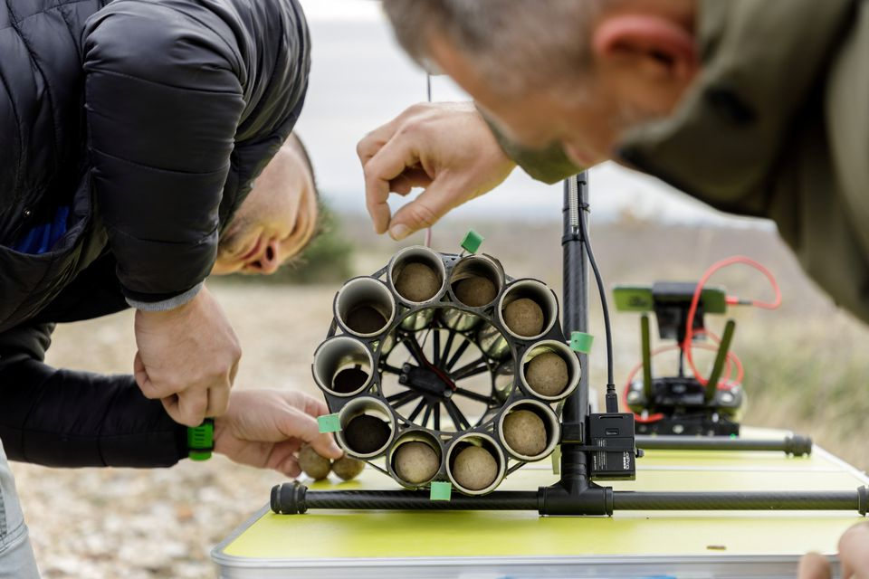

Drone being filled with seed balls to be scattered across forests.
Why is this necessary?
In Croatia they often have summer forest fires, many in not easily accessible areas therefore the use of drones is very useful.
An Efficient Solution
The use of drones is very effective in solving this problem.
In 8 hours 4/5 drones can cover 24 acres.
Over 40% of the seeds dispersed have taken route.
The drones carry larger payloads than used elswhere. These contain:
Acorn
Sand
Grass
Clay
Chili
The Magic Forest Organisation
Magic Forest is the organisation undertaking this operation to try reseed the remote forests which have suffered most in Croatia. They also aim to take part in an EU drive to replant over 3 billion additional trees by 2030.